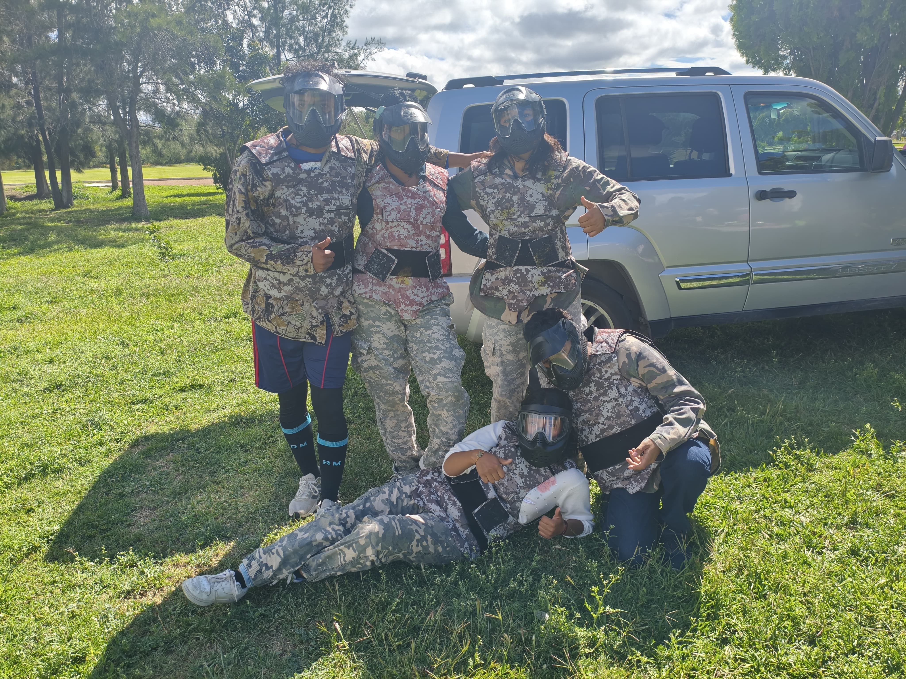

<html>
</html lang="en">
    <head>
        <meta charset="UTF-8">
        <meta name="viewport" content="width=device-width, initial-scale=1.0">
        <title>Página de Allison Yareli</title>
    <!DOCTYPE html>
<html lang="es">
<head>
  <meta charset="UTF-8">
  <meta name="viewport" content="width=device-width, initial-scale=1.0">
  <title>Mi Página Azul</title>
  <style>
    /* Estilo general */
    body {
      font-family: Arial, sans-serif;
      margin: 0;
      padding: 0;
      background: linear-gradient(135deg, #1565c0, #1e88e5, #90caf9);
      color: #ffffff;
      text-align: center;
    }

    header {
      background-color: #0d47a1;
      padding: 2rem;
    }

    header h1 {
      margin: 0;
      font-size: 2rem;
    }

    main {
      padding: 2rem;
    }

    p {
      line-height: 1.6;
    }

    footer {
      background-color: #0d47a1;
      padding: 1rem;
      margin-top: 2rem;
      font-size: 0.9rem;
    }
  </style>
</head>
<body>

</head>
    <body>

            <p>Holiii, me llamo Allison Yareli, pertenezco a Mixquiahuala y vivo en Tepatepec. Me gusta Escuchar música, Leer, Ver series y Peliculas, Salir a caminar y Platicar con las personas</p>
            <h1>¿Por qué decidí estudiar Tics?:</h1>
        </body>
            <h2>Mis pasatiempos favoritos son:</h2>
            <ul>
                <li>Escuchar música</li>
                <li>Leer</li>
                <li>Ver series y películas</li>
                <li>Salir a caminar</li>
                <li>Platicar con las personas</li>
            </ul>
            <h1>Mi comida favorita:</h1>
            <p>El spaguetti.</p>
            <p>Los tacos.</p>
            <p>Los Mixiotes.</p>
            <p>El mole.</p>
            <p>El pozole.</p>

            <h2>Top 5 de mis artistas favoritos:</h2>

            <ol>
                <li>http://www.youtube.com/@elvecindariocalle13</li>
                <li>http://www.youtube.com/@ResidenteOfficial</li>
                <li>http://www.youtube.com/@iamlpofficial</li>
                <li>http://www.youtube.com/@PanteonRococoOficial</li>
                <li>http://www.youtube.com/@LosCaligarisok</li>
            </ol>
            <h1>Mis mejores fotos:</h1>
            
            
            
            
            
        </body>
</html>